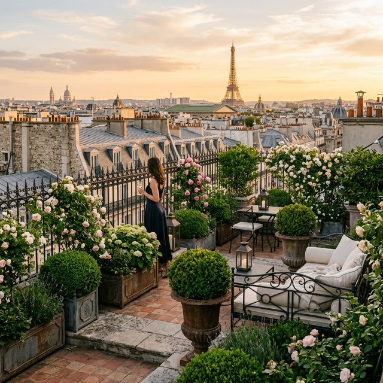

Établi à Paris — 1994
La Nature
La Nature
S'invite
Chez Vous
Conception de jardins suspendus et terrasses d'exception au cœur de l'architecture Haussmannienne.

Ils nous font confiance pour leur patrimoine
L'Excellence
du Sur-Mesure
01.
Jardins Haussmanniens
L'art de transformer les balcons et cours intérieures historiques en havres de paix biodiversifiés.
02.
Rooftops Panoramiques
Ingénierie de structure et végétalisation de toitures-terrasses avec vue sur la Tour Eiffel.


"Un jardin à Paris n'est pas un luxe, c'est une respiration nécessaire au prestige de l'âme."
— Jean-Marc Lefebvre, Fondateur
Donnez vie à votre espace
Nos experts se déplacent dans tout Paris et l'Île-de-France pour une première étude de faisabilité de votre projet.
Commencer l'Étude